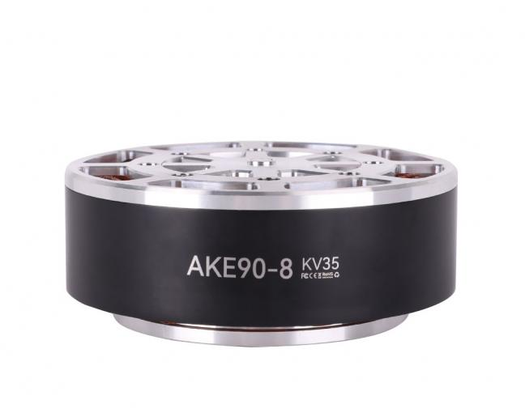

CUBEMARS / PRODUCT MATRIX · v0.2.2
CubeMars 产品矩阵
74条型号／供电／反馈配置 · 核查于2026-11-03

AKE90-8 KV35 ↗
55 N·m额定扭矩170 N·m峰值扭矩700 W厂商额定功率120 rpm额定转速1.4 kg机械单元质量
AKE90-8 KV35 为本项目膝关节拟选（用户提供，实装待确认）。商品默认是电机＋8∶1减速器机械单元，不含驱动器；55／170 N·m已经是减速器输出端。膝部额外连杆、同步带与效率未知，不能直接将其当作膝关节末端扭矩。
厂商规格与图纸 ↗产品线与定位
AK 19通用行星关节兼顾力控与伺服；反馈配置按具体代际AKA 2径向承载强化轮式平台；承载指标与关节扭矩分别阅读AKH 2中空行星关节中空走线、双端反馈AKE 5准直驱机械单元电机＋减速器，默认外配驱动RI 12无框内转子定转子集成；霍尔不是编码器RI-PH 6灌封无框内转子焊接与接插件配置分列RO 8无框外转子Standard/Lite与霍尔配置分列GL II 3集成驱动云台单元无齿轮减速；轴端参数GL 9GL 云台电机外配驱动；编码器选项需另核对G 8G 云台电机官网规格冲突保留为待核
按官网当前目录与可选KV／反馈入口整理；没有把所有允许供电电压或可选驱动板组合虚构成独立产品。无框电机按电机轴端，AK/AKE等按减速器输出端；霍尔不计为编码器。部分普通RI与多电压AK的功率未绑定供电，相关数值缺省。
性能矩阵
| 型号／配置 | 系列 | 驱动器 | 编码器 | Tn N·m | Tpeak N·m | P W | n rpm | m kg | i | 参数端口 |
|---|---|---|---|---|---|---|---|---|---|---|
| AKE90-8 KV35 ↗ | AKE | 外配驱动 | 未配置 | 55 | 170 | 700 | 120 | 1.4 | 8 | 减速后 |
| AK10-9 V3.0 KV60 ↗ | AK | 含驱动 | 双编码器 | 18 | 53 | 442 | 235 | 0.94 | 9 | 减速后 |
| AK80-9 V3.0 KV100 ↗ | AK | 含驱动 | 单编码器 | 9 | 22 | 368 | 390 | 0.49 | 9 | 减速后 |
| AK70-9 V3.0 KV60 ↗ | AK | 含驱动 | 双编码器 | 8.5 | 29.2 | 231 | 260 | 0.54 | 9 | 减速后 |
| AKH70-48 V1.0 KV41 ↗ | AKH | 含驱动 | 双编码器 | 74 | 222 | 217 | 28 | 1.396 | 48 | 减速后 |
| AKH70-16 V1.0 KV41 ↗ | AKH | 含驱动 | 双编码器 | 26 | 78 | 245 | 90 | 0.879 | 16 | 减速后 |
| AKA10-9 KV60 ↗ | AKA | 含驱动 | 单编码器 | 18 | 53 | 205 | 109 | 1.06 | 9 | 减速后 |
| AKA60-6 KV80 ↗ | AKA | 含驱动 | 单编码器 | 3 | 9 | — | 400 | 0.46 | 6 | 减速后 |
| AKE80-8 KV30 ↗ | AKE | 外配驱动 | 未配置 | 12 | 30 | 188 | 150 | 0.57 | 8 | 减速后 |
| AKE60-8 KV80 ↗ | AKE | 外配驱动 | 未配置 | 5 | 12.5 | 95 | 180 | 0.26 | 8 | 减速后 |
| AKE40-6 KV90 ↗ | AKE | 外配驱动 | 未配置 | 1.8 | 5.5 | 50 | 260 | 0.14 | 6 | 减速后 |
| AK10-9 V2.0 KV60 ↗ | AK | 含驱动 | 双编码器 | 18 | 48 | — | 228 | 0.96 | 9 | 减速后 |
| AK80-8 KV60 ↗ | AK | 含驱动 | 双编码器 | 10 | 25 | 230 | 243 | 0.575 | 8 | 减速后 |
| AK80-6 KV100 ↗ | AK | 含驱动 | 单编码器 | 6 | 12 | 340 | 603 | 0.485 | 6 | 减速后 |
| AK40-10 V3.0 KV170 ↗ | AK | 含驱动 | 双编码器 | 1.3 | 4.1 | 50 | 370 | 0.19 | 10 | 减速后 |
| AK45-10 V3.0 KV75 ↗ | AK | 含驱动 | 双编码器 | 2.5 | 7 | 39 | 120 | 0.262 | 10 | 减速后 |
| AK45-36 V3.0 KV80 ↗ | AK | 含驱动 | 双编码器 | 8 | 24 | 33.5 | 40 | 0.349 | 36 | 减速后 |
| AK80-64 KV80 ↗ | AK | 含驱动 | 单编码器 | 48 | 120 | — | 48 | 0.85 | 64 | 减速后 |
| AK70-10 KV100 ↗ | AK | 含驱动 | 单编码器 | 8.3 | 24.8 | — | 310 | 0.621 | 10 | 减速后 |
| AK60-39 V3.0 KV80 ↗ | AK | 含驱动 | 双编码器 | 24 | 72 | 176 | 70 | 0.75 | 39 | 减速后 |
| AK60-6 V3.0 KV80 ↗ | AK | 含驱动 | 单编码器 | 3 | 9 | — | 490 | 0.38 | 6 | 减速后 |
| AK60-6 V1.1 KV140 ↗ | AK | 含驱动 | 单编码器 | 3 | 9 | 130 | 420 | 0.368 | 6 | 减速后 |
| AK45-36 KV80 ↗ | AK | 含驱动 | 单编码器 | 8 | 24 | 33 | 40 | 0.34 | 36 | 减速后 |
| AK45-10 KV75 ↗ | AK | 含驱动 | 单编码器 | 2.5 | 7 | 39 | 150 | 0.26 | 10 | 减速后 |
| AK40-10 KV170 ↗ | AK | 含驱动 | 单编码器 | 1.3 | 4.1 | 59 | 370 | 0.185 | 10 | 减速后 |
| AKE50-8 KV110 ↗ | AKE | 外配驱动 | 未配置 | 2.5 | 7.5 | 65 | 240 | 0.19 | 8 | 减速后 |
| AK10-9 V2.0 KV100 ↗ | AK | 含驱动 | 双编码器 | 18 | 48 | — | 421 | 0.96 | 9 | 减速后 |
| AK60-6 V1.1 KV80 ↗ | AK | 含驱动 | 单编码器 | — | — | — | — | 0.368 | 6 | 减速后 |
| RI100 KV105 · 带霍尔 ↗ | RI | 外配驱动 | 未配置 | 1.76 | 4.95 | — | 2825 | 0.5 | — | 轴端 |
| RI100 KV105 · 无霍尔 ↗ | RI | 外配驱动 | 未配置 | 1.76 | 4.95 | — | 2825 | 0.5 | — | 轴端 |
| RI115-PH KV40 Welded Model ↗ | RI-PH | 外配驱动 | 未配置 | 5.5 | 16 | 823 | 1430 | 1.108 | — | 轴端 |
| RI115-PH KV40 With Connector ↗ | RI-PH | 外配驱动 | 未配置 | 5.5 | 16 | 823 | 1430 | 1.108 | — | 轴端 |
| RI20 KV600 ↗ | RI | 外配驱动 | 未配置 | 0.024 | 0.072 | 18 | 7452 | 0.02 | — | 轴端 |
| RI30 KV260 ↗ | RI | 外配驱动 | 未配置 | 0.076 | 0.23 | 33 | 4110 | 0.04 | — | 轴端 |
| RI50 KV100 · 带霍尔 ↗ | RI | 外配驱动 | 未配置 | 0.58 | 1.67 | — | 2600 | 0.1808 | — | 轴端 |
| RI50 KV100 · 无霍尔 ↗ | RI | 外配驱动 | 未配置 | 0.58 | 1.67 | — | 2600 | 0.1808 | — | 轴端 |
| RI60 KV120 · 带霍尔 ↗ | RI | 外配驱动 | 未配置 | 0.57 | 1.63 | — | 3190 | 0.1559 | — | 轴端 |
| RI60 KV120 · 无霍尔 ↗ | RI | 外配驱动 | 未配置 | 0.57 | 1.63 | — | 3190 | 0.1559 | — | 轴端 |
| RI70 KV95 · 带霍尔 ↗ | RI | 外配驱动 | 未配置 | 0.94 | 2.68 | — | 2710 | 0.2704 | — | 轴端 |
| RI70 KV95 · 无霍尔 ↗ | RI | 外配驱动 | 未配置 | 0.94 | 2.68 | — | 2710 | 0.2704 | — | 轴端 |
| RI75-PH KV70 Welded Model ↗ | RI-PH | 外配驱动 | 未配置 | 1.2 | 3.8 | 297 | 2365 | 0.348 | — | 轴端 |
| RI75-PH KV70 With Connector ↗ | RI-PH | 外配驱动 | 未配置 | 1.2 | 3.8 | 297 | 2365 | 0.348 | — | 轴端 |
| RI80 V2.0 KV75 · 带霍尔 ↗ | RI | 外配驱动 | 未配置 | 1.45 | 4.1 | — | 2430 | 0.411 | — | 轴端 |
| RI80 V2.0 KV75 · 无霍尔 ↗ | RI | 外配驱动 | 未配置 | 1.45 | 4.1 | — | 2430 | 0.411 | — | 轴端 |
| RI85-PH KV85 Welded Model ↗ | RI-PH | 外配驱动 | 未配置 | 2 | 5 | 637 | 3042 | 0.411 | — | 轴端 |
| RI85-PH KV85 With Connector ↗ | RI-PH | 外配驱动 | 未配置 | 2 | 5 | 637 | 3042 | 0.411 | — | 轴端 |
| RO100 KV55 Lite without hall ↗ | RO | 外配驱动 | 未配置 | 4 | 12 | 838 | 2000 | 0.525 | — | 轴端 |
| RO100 KV55-Standard-with-hall ↗ | RO | 外配驱动 | 未配置 | 4 | 12 | 838 | 2000 | 0.71 | — | 轴端 |
| RO40 KV140 Lite ↗ | RO | 外配驱动 | 未配置 | 0.2 | 0.6 | 51 | 2450 | 0.06 | — | 轴端 |
| RO50 KV108 Lite ↗ | RO | 外配驱动 | 未配置 | 0.3 | 0.9 | 66 | 2100 | 0.105 | — | 轴端 |
| RO60 KV115 Lite without hall ↗ | RO | 外配驱动 | 未配置 | 0.8 | 2.4 | 352 | 4200 | 0.195 | — | 轴端 |
| RO60 KV115-Standard-with-hall ↗ | RO | 外配驱动 | 未配置 | 0.8 | 2.4 | 352 | 4200 | 0.248 | — | 轴端 |
| RO80 KV105 Lite without hall ↗ | RO | 外配驱动 | 未配置 | 1.3 | 4 | 490 | 3600 | 0.265 | — | 轴端 |
| RO80 KV105-Standard-with-hall ↗ | RO | 外配驱动 | 未配置 | 1.3 | 4 | 490 | 3600 | 0.352 | — | 轴端 |
| GL40 II KV82.5 ↗ | GL II | 含驱动 | 未披露 | 0.25 | 0.68 | 19 | 697 | — | — | 轴端 |
| GL60 II KV28 · 16V ↗ | GL II | 含驱动 | 未披露 | 0.6 | 1 | 10 | 153 | 0.276 | — | 轴端 |
| GL60 II KV28 · 24V ↗ | GL II | 含驱动 | 未披露 | 0.6 | 1.5 | — | 319 | 0.276 | — | 轴端 |
| GL30 KV290 ↗ | GL | 外配驱动 | 未配置 | 0.08 | 0.28 | 16 | 1990 | 0.041 | — | 轴端 |
| GL35 KV100 ↗ | GL | 外配驱动 | 未配置 | 0.15 | 0.46 | 13 | 815 | 0.09 | — | 轴端 |
| GL40 KV70 ↗ | GL | 外配驱动 | 未配置 | 0.25 | 0.5 | 12 | 430 | 0.107 | — | 轴端 |
| GL40 KV210 ↗ | GL | 外配驱动 | 未配置 | 0.25 | 0.75 | — | 2100 | 0.107 | — | 轴端 |
| GL60 KV25 ↗ | GL | 外配驱动 | 未配置 | 0.6 | 1.75 | 20 | 310 | 0.23 | — | 轴端 |
| GL60 KV55 ↗ | GL | 外配驱动 | 未配置 | 0.6 | 1.75 | — | 840 | 0.226 | — | 轴端 |
| G35 KV100 ↗ | G | 待核 | 未披露 | 0.15 | 0.46 | — | — | — | — | 轴端 |
| G40 KV70 ↗ | G | 待核 | 未披露 | 0.25 | 0.5 | — | — | — | — | 轴端 |
| G40 KV210 ↗ | G | 待核 | 未披露 | 0.25 | 0.75 | — | — | — | — | 轴端 |
| G60 KV25 ↗ | G | 待核 | 未披露 | 0.6 | 1.75 | — | — | — | — | 轴端 |
| G60 KV55 ↗ | G | 待核 | 未披露 | 0.6 | 1.75 | — | — | — | — | 轴端 |
| G80 KV30 ↗ | G | 待核 | 未披露 | 1 | 2.9 | — | — | — | — | 轴端 |
| G80 KV60 ↗ | G | 待核 | 未披露 | 1 | 2.9 | — | — | — | — | 轴端 |
| G100 KV10 ↗ | G | 待核 | 未披露 | 3 | 7.7 | — | — | — | — | 轴端 |
| GL80 KV30 ↗ | GL | 外配驱动 | 未配置 | 1 | 2.9 | 48 | 450 | — | — | 轴端 |
| GL80 KV60 ↗ | GL | 外配驱动 | 未配置 | 1 | 2.9 | 106 | 1010 | 0.315 | — | 轴端 |
| GL100 KV10 ↗ | GL | 外配驱动 | 未配置 | 3 | 7.7 | 41 | 130 | 0.698 | — | 轴端 |
Tn：额定／连续扭矩；P：厂商额定功率；n：额定转速；i：减速比。—表示未披露、工况无法可靠对应或不适用。所有原始条件与出处可由型号链接查看。
AKA10-9同页空载转速280／320 rpm不一致；独立规格优先并保留差异。AK60-6 V1.1 KV80页面却列KV140电气表，错配电气参数留空。RI80峰值电流、GL40 II及G系列部分质量／转速也有冲突，均在型号详情中注明。未知不按0参与筛选。
水下推进产品目录
8款推进器和2款TW电调仅作为厂商产品线索引。推进器推力、功率与关节扭矩物理口径不同，未混入上方N·m矩阵。